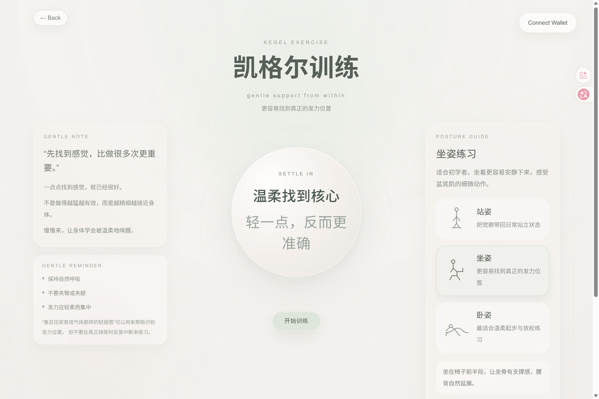

Life & Co-Existence
HerRhythm
A gentle Web3 ritual for women
HerRhythm explores a lighter, softer, and more sustainable approach to women’s wellness through breathing practice, Kegel exercise, and daily on-chain check-ins.
HerRhythm 以腹式呼吸、凯格尔训练与每日链上打卡为核心， 探索一种更轻量、温和且可持续的女性身心照护方式。
Breathing Practice · Kegel Exercise · Daily On-chain Check-In
Return to your body, your pace, your rhythm.



Why HerRhythm
Women’s wellness is often discussed only when discomfort becomes visible, while everyday body awareness and gentle self-care are easily overlooked.
HerRhythm 关注女性在日常生活中常被忽略的身体觉察与自我照护需求， 尝试以更低负担的练习与记录机制，支持温和而持续的健康习惯。
Body Awareness
身体觉察
帮助用户重新感受呼吸、紧张状态与身体节律，建立更细微的日常身体感知。Support a closer connection to breath, tension, and bodily rhythm.
Gentle Support
温和支持
降低健康习惯中常见的任务感与压力感，让练习更容易被接受和进入。Reduce the sense of pressure often associated with health routines.
Sustainable Habit
可持续习惯
以轻量、可重复的方式鼓励日常照护，让小幅度坚持变得更可持续。Encourage small but repeatable acts of daily care.
Core Experience
Three connected practices shape the HerRhythm experience: regulation, strengthening, and daily check-in.
HerRhythm 将呼吸调节、身体练习与日常记录连接为一条完整但低负担的体验路径。
Breathing Practice
腹式呼吸
通过引导式 4·2·6 呼吸节律，帮助用户在短时间内回到更稳定的呼吸与身体状态。A guided 4·2·6 rhythm that helps users return to a steadier breathing pattern and a calmer physical state.
Kegel Exercise
凯格尔训练
以更柔和的方式支持女性进行日常盆底肌练习，兼顾觉察、支持与长期照护。A softer daily practice designed to support pelvic awareness, gentle strengthening, and ongoing care.
Daily Check-In
每日打卡
将轻量的完成行为转化为清晰可见的日常记录，形成持续性的照护节律。A simple completion record that turns small acts of care into visible daily continuity.
What Makes It Different
HerRhythm aims to stay balanced between encouragement and pressure: preserving continuity without reducing self-care to repetitive counting.
HerRhythm 希望在激励与压力之间保持克制：既保留记录机制， 也避免将自我照护简化为重复计数。
One Check-In per Day
每天一次链上记录
将每日记录控制在一次，避免打卡被无限叠加，让使用节奏更清晰、轻量，也更容易长期坚持。Keep the ritual clear, lightweight, and sustainable.
Care Beyond Counting
照护不止于计数
即使当天不再新增链上记录，练习本身仍然有意义，不会因为“不能重复打卡”而被视作无效。Even when no additional check-in is added, the practice itself still retains meaning.
Gentle Completion
温柔完成态
完成练习后，产品提供的是确认与鼓励，而不是任务式、效率导向的结果反馈。Completion is framed through affirmation rather than productivity-driven feedback.
Emotional Aftercare
情绪支持
通过背景音乐、每日鼓励签与轻量氛围反馈，让体验在“完成动作”之后仍然保留柔和的情绪延续。Background music and daily encouragement notes extend the experience with softness, ritual, and emotional continuity.
Why Web3
HerRhythm does not place everything on-chain. Instead, it keeps sensitive wellness details local and records completion behavior on-chain, seeking a balance between privacy and continuity.
HerRhythm 并不将所有健康信息上链，而是将敏感身心细节保留在本地， 仅记录完成行为与连续记录，在隐私保护与持续激励之间寻求平衡。
Privacy-Friendly
隐私友好
将更私人的身心细节留在本地保存，避免健康相关信息被公开暴露。Sensitive personal details remain local rather than publicly exposed.
Continuity
持续记录
把完成行为转化为可延续的日常痕迹，让照护行为积累为个人节律的一部分。Completion behavior becomes part of an ongoing personal rhythm.
On-chain Witness
链上见证
让微小却真实的自我照护不再只是转瞬即逝，而是成为值得被保留的行动记录。Small acts of care are not treated as disposable, but as actions worth retaining.
HerRhythm has been developed as a functional MVP focused on completing the full care-to-check-in flow.
支持用户连接钱包，进入后续链上打卡与记录查看流程。
完成练习后可进行当日链上记录，形成清晰的每日完成反馈。
展示用户连续完成情况，帮助形成稳定的使用节奏与成长感。
查看过往打卡与完成记录，让日常照护具有可回看性。
项目目前已具备可访问、可演示的线上体验版本。
Return to your body, your pace, your rhythm.
HerRhythm 希望将女性日常生活中微小却真实的自我照护， 转化为一种可感知、可延续、可被认真保留的个人节律。
HerRhythm seeks to turn small yet real acts of self-care into a personal rhythm that can be felt, continued, and meaningfully kept.